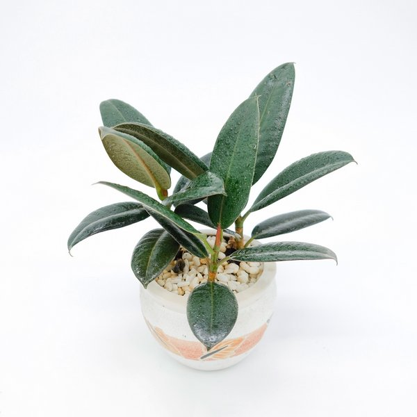
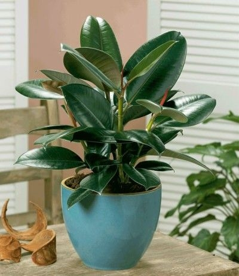

– Kích thước: 25 cm x 12 cm x 12 cm (cao x dài x rộng)
– Thành phần: Cây Đinh lăng cẩm thạch.
– Đặc điểm: Cây không cần đất, Sống tốt dưới ánh sáng đèn, Văn phòng máy lạnh…
– Sản Phẩm bao gồm: Chậu cây; Hộp; Tag tên; HD chăm sóc..
– Bảo hành: 90 ngày
– Thời gian sống: Trên 1 năm
Cây đa, bến nước, sân đình là những đặc trưng của người Việt Nam qua bao nhiêu năm thăng trầm lịch sử. Nằm trong bộ tứ quý đa, sung, sanh, si, thì cây đa được nhắc đến với sự gần gũi với con người hơn. Ngày nay với sự sinh trưởng phát triển giống như cây đa và những chồi mới của cây được bao bọc bởi lớp lá non màu đỏ, búp non này có hình giống ngòi bút của ông đồ nên chúng được gọi là cây búp đa đỏ . Cùng Cây Xinh thử tìm hiểu về loại cây này về đặc điểm và ý nghĩa cây đa búp đỏ của chúng mang lại nhé.
+ Trồng trong chậu làm cây nội thất đẹp: Cây đa búp đỏ có thể sống tốt trong môi trường có ánh sáng yếu, cây có khả năng hút bụi và khí độc tốt nên thường được trồng làm cây nội thất trang trí trong văn phòng làm việc, nhà hàng, khách sạn,...
+ Đa búp đỏ có thể trồng trong chậu nhỏ đặt tại nhiều vị trí như bàn làm việc, bệ cửa sổ,...
+ Đa búp đỏ biểu tượng của sự trường tồn, sức sống dẻo dai, còn là biểu tượng thần quyền và tâm linh của con người.
+ Trong phong thủy, cây có ý nghĩa mang lại sự bình an cho gia đình.
+ Cây ưu sáng hoặc chịu được bóng bán phần, ưu ẩm, đất trồng cần tươi xốp, nhiều mùn và chứa nhiều dinh dưỡng.
+ Tưới nước cho cây thường xuyên, lượng nước vừa đủ tùy theo mùa, tránh gây ngập úng cây.
+ Cây sinh trưởng nhanh nền cần cung cấp dinh dưỡng khoảng 1 lần / tháng. Nên dùng phân NPK pha loãng dạng nước để tưới cho cây.
+ Để cây có dáng đẹp ta có thể tùy chỉnh kích thước cây, khi cây mọc khoảng 60 – 80cm phải ngắt ngọn để cây hạn chế chiều cao của cây, cắt tỉa cành nhánh thường xuyên để cây có dáng đẹp.